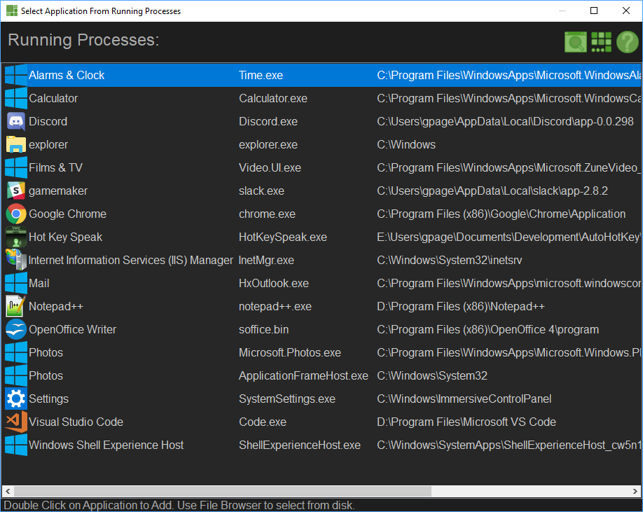

This allows you to find an Application using the Desktop.
After Activation, Navigate to the Application on the Desktop you wish to add and tap the Left Ctrl on the Keyboard.
The Select Application Interface allows you to choose Applications in order to add them to the Hot Key Speak system. From left to right you will see the Icon for the Application, Its Title, The Program Name and the Location on Disk. If the Application does not have an Icon, the Broken Icon will be shown for the Icon. If the Application is a Windows 10 App, the Windows 10 App Icon will be used.
Double Click the Application you wish to add to Hot Key Speak.
You can use the Find Window Option to locate an application using the Desktop.
You can use the Select From File Option if the Application is not running.
Be advised that the leftmost column tries to determine a proper display name of the application by looking for the "file - app name" standard.... Some apps use "app - filename" which may result in confusing display here and down the usage chain. Be sure looking at the Icon and the Program File Name that the item you chose is the right one.
Related, the actual program executable may not display the name you would like to see in the tree-view. It is a simple matter to rename the tree-view item after you added the item in the tree-view.
Be advised that Windows 10 Apps are handled differently than traditional program. When adding such an app in the tree-view, a Root Windows 10 Apps application will be added where all the Windows 10 Apps will be located in the form of a Window Context entry.
|
|
This allows you to find an Application using the Desktop. After Activation, Navigate to the Application on the Desktop you wish to add and tap the Left Ctrl on the Keyboard. |

|
This allows selecting an Application using a File Explorer. Use the File Explorer to locate the application on your Disk. |